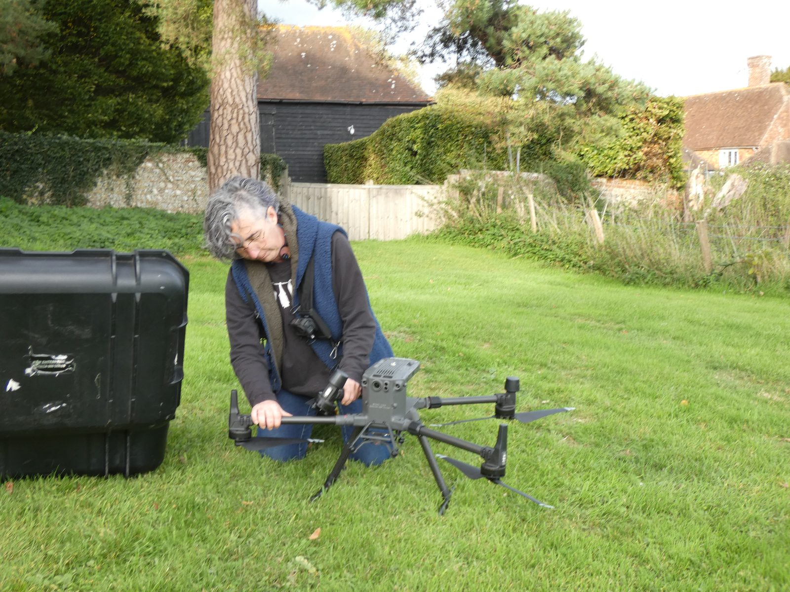
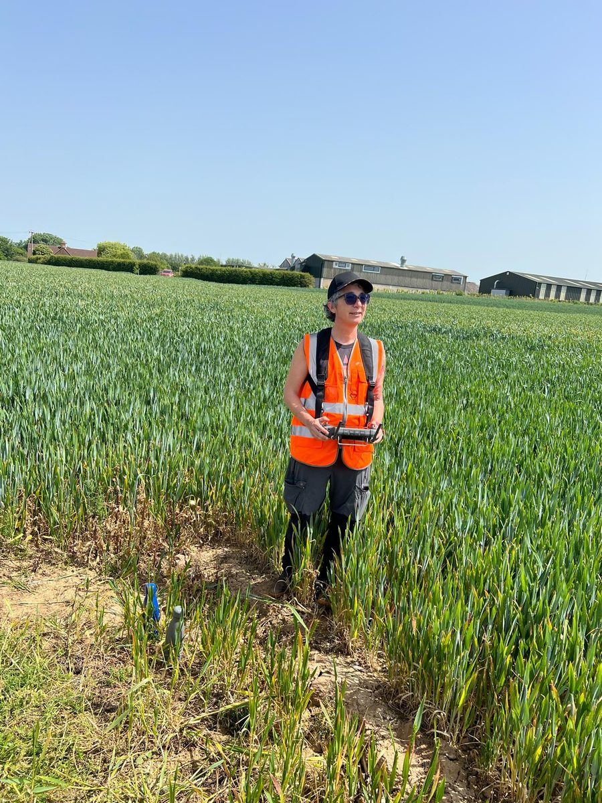
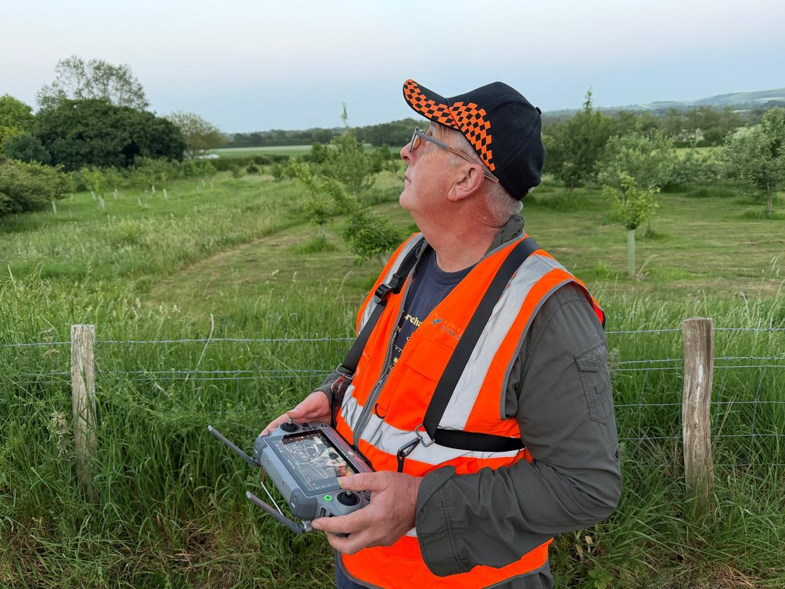

Home / About
Ecologists who fly
Aerial Ecology was founded by Clara Gonzalez Hernandez, an ecologist with over ten years of consultancy experience. Based in East Sussex, we support projects across Sussex, Surrey, Kent, Hampshire and further afield.

Who we are
Practical ecology, better tools
We combine field ecology with thermal imaging, GIS and drone technology to improve survey coverage and produce outputs that support sound ecological decisions.
We're ecologists first. Thermal cameras and drones are tools we use when they add something: better coverage, clearer evidence, or data you couldn't get any other way.
Team
The people on site

Clara Gonzalez Hernandez
Founder & Principal EcologistClara specialises in thermal imaging, drone survey workflows, GIS analysis and technical ecological interpretation. Her work covers protected species surveys, habitat assessment and complex projects, as well as bat sound analysis, technical reporting and ecological QA.

Robert Wallace
Head of Site OperationsRob oversees aerial operations and field deployment. Originally trained as an archaeologist, he directs the Culver Archaeological Project and has supported protected species surveys since 2017, mainly bat survey assistance, field logistics and multi-equipment workflows.
Expertise
Ecological and operational expertise
Every survey is led by ecologists. The technology is chosen and interpreted by people who know the species, the guidance and the reports it has to support.
Ecological consultancy
Over ten years of ecological consultancy experience, led by a Full Member of CIEEM. Protected species surveys, habitat assessment, technical reporting and ecological QA.
Bat survey expertise
Led by a Natural England Class 2 bat licence holder. Emergence and re-entry surveys, bat sound analysis, survey design and Ecological Clerk of Works (ECoW) for bats.
Thermal survey experience
Aerial and ground-based thermal imaging for bat emergence and re-entry surveys, and commercial thermal skylark nest detection surveys.
Drone operations
Flights are flown by CAA-qualified remote pilots: Clara holds the General VLOS Certificate (GVC) and A2 Certificate of Competency (A2 CofC), and Rob holds the A2 CofC. Flights are planned and risk-assessed for each site, and coordinated with ground survey teams.
GIS and spatial analysis
Habitat mapping, suitability modelling and spatial analysis, with outputs built to fit consultancy reporting workflows.
Multi-equipment fieldwork
Coordinated deployment of drones, ground-based thermal cameras and other survey equipment on larger or complex sites.
How we work with consultancies
An extension of your team
Your client, your report
We slot into your project and deliver outputs in the format your report needs.
Method before kit
We agree what thermal or aerial methods add before we deploy them, and say so when a conventional survey is enough.
Reviewable evidence
You get the recordings as well as the interpretation, so the evidence can be checked and reviewed.
Work with us